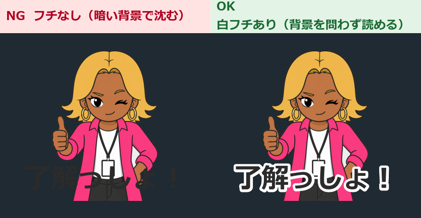

第12章 よくある失敗
この章でわかること
- LINEスタンプ制作でつまずく24の失敗
- それぞれの原因と対策
- 工程別のリスクの分布
- 失敗を事前に防ぐチェックリスト
なぜ失敗をまとめて読むのか
結論。
失敗は、パターンが決まっています。
そして、そのほとんどは事前に防げます。
私が実際にやった失敗、周りで見た失敗、仕組み上起きる失敗を24個並べました。
先に読んでおくと、同じ道を通らずに済みます。
失敗の分布
工程別に整理すると、こうなります。
| 工程 | 失敗の数 | 特徴 |
|---|---|---|
| 企画 | 4 | 気づくのが遅い。手戻りが大きい |
| キャラクター設計 | 3 | 40枚ぶんの作り直しにつながる |
| セリフ | 4 | 使われないスタンプになる |
| 画像生成 | 4 | 途中で気づけば軽傷 |
| 画像加工 | 5 | リジェクトの最大原因 |
| 申請 | 2 | 作業が止まる |
| 販売後 | 2 | 存在を知られないまま終わる |
加工工程がいちばん危険です。
そして、加工の失敗は自動チェックで防げます（第11章）。
企画の失敗（4件）
失敗1 最初から40枚を完成させようとする
症状
40枚作り終えてから、「顔が違う」「文字が小さい」「透過できていない」と気づく。
40枚ぶんの作り直しになる。
そして、途中で力尽きる。
原因
- 検証のタイミングを設けていない
- 「完成させてから確認する」という順番になっている
対策
まず4枚だけ作ります。
そして、スマートフォンで確認します。
問題がなければ残り36枚に進みます。
4枚なら、やり直しは4枚ぶんです。
この1点だけで、挫折率が大きく下がります。
失敗2 ターゲットが曖昧
症状
「みんなが使える」スタンプを作ったが、誰も使わない。
セリフを考えるときに手が止まる。
原因
- 使う人を決めずにテーマを決めた
- 「かわいい系」「面白い系」のような抽象的な括りで考えた
対策
第2章の1行テンプレートを埋めます。
【使う人】〇〇な人（年齢感・職業・立場）
【使うトーク】誰とのトークか
【使う場面】3つ
埋まらないテーマは、まだ決まっていません。
「3歳児クラスの担任をしている保育士」まで絞ると、セリフが自動で出てきます。
失敗3 使いどころがないスタンプを作る
症状
面白いけれど、送る場面がない。
自分でも使わない。
原因
- 「面白いか」だけで判断した
- 「送る場面」を考えていない
対策
各セリフについて、この1文を書けるか確認します。
（ ）のときに、（ ）に送る。
書けなければ、そのセリフは外します。
「宇宙一だね！」は面白いですが、送る場面がありません。
失敗4 競合を確認しないで作り始める
症状
完成後に検索したら、同じ切り口の作品が大量にあった。
原因
- 作る前にスタンプ検索をしなかった
対策
作る前に5分でスタンプ検索します。
そして、多かったら切り口をずらします。
「保育士」で大量に出てきた
↓
「3歳児クラス担任」に絞る
↓
「保育士の連絡帳返信」に絞る
競合が多いのは、需要がある証拠です。
諦めるのではなく、絞ります。
キャラクター設計の失敗（3件）
失敗5 キャラクターが毎回変わる
症状
1枚目と20枚目で、髪の長さ、肌の色、年齢感が違う。
40枚が「同じシリーズ」に見えない。
原因
- 設定を短く要約して画像生成AIに渡している
- 基準画像を作っていない
- 色を言葉だけで指定している（「明るい茶色」など）
対策
3つやります。
- 設定文を毎回まるごと貼る（要約しない）
- 基準画像を1枚作り、参照させる
- 色は色コードで指定する（
#E8C468など）
そして、プロンプトの末尾にこの1行を入れます。
※ 髪型・髪色・肌の色・服装・小物・画風は基準画像と完全に同一にしてください。
変更してよいのは表情とポーズのみです。
失敗6 頭身が高すぎる
症状
スマートフォンで見たとき、顔が小さくて表情が読めない。
原因
- リアル寄り（5頭身以上）で設計した
- パソコンの大きな画面だけで確認した
対策
2〜3頭身にします。
スタンプは小さく表示されます。
顔が大きいほうが有利です。
「かっこよさ」より「表情が読めること」を優先します。
失敗7 線が細い・色が薄い
症状
縮小すると線が消える。
トーク背景に溶けて見えなくなる。
原因
- 上品に見せようとして細い線・淡い色を選んだ
- 縮小して確認していない
対策
- 輪郭線を太くする（縮小しても消えない太さ）
- 色を濃くする（パステル調は避ける）
- キャラクターの外側に白いフチを2〜4px付ける（第6章）
淡い色は、スマートフォンで消えます。
セリフの失敗（4件）
失敗8 セリフが長い
症状
文字が小さくなって読めない。
原因
- 文章のまま入れた
- 文字数の目安を決めていない
対策
原則8文字以内にします。
超える場合は、3つの方法があります。
方法1 言い切る：「資料の作成が完了しました」→「資料できた！」
方法2 2行にする：「遅くなって / ごめん！」
方法3 ポーズで補う：「あとで！」＋スマホを見せるポーズ
失敗9 文字が小さい
症状
パソコンでは読めるが、スマートフォンでは読めない。
原因
- パソコンの画面だけで判断した
- キャラクターを大きくして、文字を小さくした
対策
- セリフが画像の高さの20〜30%を占めるようにする
- 太いゴシック体か丸ゴシック体を使う
- スマートフォンに送って確認する（自分専用のLINEグループ）
- 腕の長さ離して読めるか見る
失敗10 同じ意味のセリフが重複する
症状
「了解」「わかった」「オッケー」が別々の枚数を占めている。
実質、1枚で足りる。
原因
- 40個を一気に書いて、見直していない
対策
判定基準はこれです。
同じ場面で、どちらを送るか迷うなら重複。
第4章のプロンプトでAIに重複チェックさせます。
失敗11 感情表現ばかりになる
症状
「うれしい」「かなしい」「たのしい」が20個。
「了解」が1個。
原因
- カテゴリー配分を決めずに書いた
対策
第4章の配分表に従います。
あいさつ 4 / 返事 5 / 感謝 3 / 謝罪 3 / 確認 4 /
仕事 5 / 感情 5 / 応援 4 / 締め 4 / キャラのネタ 3
トークでいちばん使うのは「返事」と「確認」です。
画像生成の失敗（4件）
失敗12 商用利用条件を確認しない
症状
40枚作ってから、そのサービスの生成物が商用利用できないと気づく。
原因
- 規約を読まずに使い始めた
- ブログやSNSの情報だけで判断した
対策
作る前に、5分で確認します。
- 商用利用できるか
- 有料プランが必要か
- 生成物の権利が誰にあるか
- クレジット表記が必要か
- 販売が許可されているか
必ず公式の利用規約・ヘルプページで確認してください。
失敗13 他作品に似すぎる
症状
既存のキャラクターに似ていると指摘される。
原因
- プロンプトに作品名・作家名を入れた
- 「〇〇風」という指定をした
- 特徴的な髪型・配色が偶然一致した
対策
- 作品名・作家名を入れない
- 画風は技法で書く
× 〇〇（作品名）風の絵柄
○ 太く均一な輪郭線、ベタ塗り、影は1段のみ
生成後に、こう自問します。
この絵を見た人が、特定の実在人物や既存キャラクターを思い出さないか。
失敗14 小物に文字やロゴが入る
症状
ノートパソコンの画面に、意味不明な文字列が出ている。
服のプリントにロゴのようなマークが出ている。
原因
- 「文字を描かない」と指定していない
- 生成後に拡大確認をしていない
対策
プロンプトに毎回入れます。
- 小物は無地（ロゴ・文字なし）
- ノートパソコンやスマートフォンの画面には何も表示しない
- 画像内に文字を一切描かない
そして、生成後に小物を拡大して確認します。
失敗15 キャラクターを画面の端まで大きく描かせる
症状
余白がなく、加工時に手や足が切れる。
審査で余白不足を指摘される。
原因
- 【構図】に余白の指定を入れていない
対策
プロンプトに書きます。
【構図】
キャラクターの周囲に均等な余白を残す（端に接触させない）
加工時にも、全体を90〜95%に縮小して中央配置します。
画像加工の失敗（5件）
失敗16 背景透過を忘れる
症状
暗い背景のトークで、白い四角が出る。
原因
- 白で塗りつぶして「透過した」と思っていた
- 保存時に透過設定がオフだった
対策
確認方法が決まっています。
- 新しいレイヤーを作る
- 黒または濃い青で塗りつぶす
- キャラクターのレイヤーの下に置く
- 白い部分が出ていないか見る
そして、validate_images.py で全枚数を機械的に確認します。
見た目では絶対にわかりません。
失敗17 白いフチが残る
症状
暗い背景で、輪郭が白く光る。
原因
- 自動の背景削除で、境界のピクセルが残った
対策
選択範囲を1px内側に縮めてから削除します。
または、輪郭を消しゴムで整えます。
失敗18 JPEGをリネームしてPNGにする
症状
アップロード時にエラーが出る、または審査で弾かれる。
原因
- 拡張子だけを変えた
対策
編集ソフトの「PNG形式で書き出し」を使います。
そして、validate_images.py で中身を確認します。
このスクリプトは、ファイルの先頭を読んで実際の形式を判定します。
目視では不可能な確認です。
失敗19 メイン画像とタブ画像を作り忘れる
症状
申請画面で止まる。
原因
- 「40枚作れば終わり」と思っていた
- メイン画像はスタンプの1枚を流用できると思っていた
対策
最初から42枚として数えます。
スタンプ画像 40枚 + メイン画像 1枚 + タブ画像 1枚 = 42枚
サイズが違うので、流用できません。
そして、タブ画像は横長です（参考：96×74）。
正方形で作ると、上下に余白が出ます。
失敗20 元画像を上書きする
症状
やり直しができない。
原因
- 加工を元ファイルに対して直接行った
- リネームで上書きした
対策
- 加工は複製に対して行う
- 元画像は
rawフォルダに保管する - リネームは
--outputで別フォルダに出す（第11章）
rename_images.py は、元ファイルを上書きしない設計にしています。
申請の失敗（2件）
失敗21 説明文と中身が合っていない
症状
審査で指摘される。
または、買った人の期待とずれる。
原因
- 説明文を先に書いて、内容を盛った
- タイトルに無関係なキーワードを詰め込んだ
対策
説明文は、セリフ40個を見ながら書きます。
実際に入っている範囲だけを書きます。
そして、タイトルには大事な言葉を2〜3語だけ入れます。
× かわいい 面白い 使える 人気 毎日 敬語 ビジネス
○ AIコンサル アイナ｜毎日つかえる40個
失敗22 ファイル名が連番になっていない
症状
ZIPでアップロードしたら、順番がバラバラになった。
原因
stamp_1.png〜stamp_40.pngのように桁をそろえていない
対策
3桁の連番にします。
stamp_001.png
stamp_002.png
...
stamp_040.png
rename_images.py で一括変換できます。
販売後の失敗（2件）
失敗23 SNS宣伝をしない
症状
販売開始したが、誰も存在を知らない。
原因
- 「良いものを作れば見つかる」と思っていた
- 宣伝は恥ずかしいと感じた
対策
販売URLだけを投稿するのではなく、過程を見せます。
- 制作過程
- ボツ案
- キャラクター設定
- 審査通過報告
- 実際の使用例
- 失敗談
- シリーズの予告
- フォロワーへの投票
ボツ案と失敗談が、いちばん読まれます。
これは押し売りではありません。
作っている様子を見せるだけです。
失敗24 1作品で終了する
症状
1作目を出して、そこで止まる。
原因
- 「思ったより売れなかった」で気持ちが折れた
- 次の企画を用意していなかった
対策
1作目の申請と同じ日に、2作目の企画表を書きます。
そして、1作目の目的をこう置いておきます。
1作目の目的は、売上ではなく「完成させて、流れを覚えること」。
2作目は、1作目の3分の1程度の時間で作れます。
理由は、テーマ・キャラクター・プロンプト・加工手順がすべて再利用できるからです。
そのまま使えるプロンプト
プロンプト1 自分の制作物を失敗リストで点検する
あなたはLINEスタンプ制作の経験者です。
以下は、私が制作したLINEスタンプの情報です。
よくある失敗の観点から点検してください。
【制作物の情報】
- テーマ：
- 使う人（1行）：
- キャラクター設定：
- セリフ40個：
- 頭身：
- 線の太さ：
- 色の濃さ：
- 透過の確認方法：
- 文字のフォントとサイズ：
- フチの有無：
- メイン画像・タブ画像：作成済み／未作成
- ファイル名の形式：
- 説明文：
- SNS宣伝の計画：
- 2作目の企画：
【点検の観点（24項目）】
企画：40枚一括制作 / ターゲット曖昧 / 使いどころなし / 競合未確認
設計：キャラのブレ / 頭身が高い / 線が細い・色が薄い
セリフ：長い / 小さい / 重複 / 感情偏重
生成：商用利用条件未確認 / 他作品に類似 / 小物の文字 / 余白なし
加工：透過忘れ / 白フチ残り / 偽PNG / メイン・タブ未作成 / 元画像上書き
申請：説明文の不一致 / ファイル名の非連番
販売後：宣伝なし / 1作品で終了
【出力形式】
| 観点 | 判定（OK / 要確認 / NG） | 指摘 | 対策 |
【最後に出力すること】
- 申請前に必ず直すべき項目（優先度順）
- 今すぐできる確認作業3つ
プロンプト2 失敗の記録を資産にする
私がLINEスタンプ制作で経験した失敗を記録に残したいです。
以下の内容を、次の作品で見返せる形に整理してください。
【今回の失敗】
（起きたことを箇条書きで貼る）
【出力してほしいこと】
1. 失敗の分類（企画 / 設計 / セリフ / 生成 / 加工 / 申請 / 販売後）
2. 根本原因（「確認していなかった」で終わらせず、工程の問題として書く）
3. 次回の工程に追加すべきチェック項目（チェックボックス形式）
4. その項目を、どの工程のどのタイミングで確認するか
5. 自動化できる項目と、目視が必要な項目の切り分け
【出力先】
lessons_learned.md として保存できるMarkdown形式
失敗を防ぐチェックリスト（工程別）
企画
- 「使う人」を1行で書いた
- 「使うトーク」を書いた
- 「使う場面」を3つ書いた
- スタンプ検索で競合10件を見た
- シリーズ2作目のアイデアがある
キャラクター設計
- 設定14項目を全部埋めた
- 色コードを4色決めた
- 頭身を2〜3頭身にした
- 線を太くした
- 基準画像を1枚作った
セリフ
- カテゴリー配分に従った（合計40）
- 全セリフが8文字以内、または2行指定
- 重複チェックをした
- 全セリフで「いつ誰に送るか」が言える
- 避けるべき表現がない
画像生成
- 商用利用条件を確認した
- 設定文をまるごと貼っている
- 「変えてよいのは表情とポーズのみ」を明記した
- 小物に「文字を描かない」を明記した
- 【構図】に余白の指定を入れた
- まず4枚だけ作った
- 4枚を並べて顔がそろっているか確認した
画像加工
- 元画像を別フォルダに保管した
- 黒背景で全枚数の透過を確認した
- 白いフチが残っていない
- 全体を90〜95%に縮小して余白を作った
- 太いフォントを使った
- フォントの商用利用条件を確認した
- 文字とキャラクターに白フチを付けた
main.pngを作ったtab.pngを作った（横長）- ファイル名を3桁連番にした
validate_images.pyで全項目OKだった
申請
- 説明文をセリフ40個を見ながら書いた
- タイトルにキーワードを詰め込んでいない
- 誇張表現を入れていない
- タグが内容に合っている
- AI利用・写真使用の確認項目に事実どおり答えた
- プレビューで確認した
- スマートフォンで実サイズを確認した
販売後
- 販売URLをメモした
- 14日ぶんの投稿計画を作った
- ボツ案を保存している
- 失敗談を書き出した
- 2作目の企画表を書いた
章のまとめ
- 失敗はパターン化されている。ほとんどは事前に防げる
- いちばん効く対策は「まず4枚」。手戻りを10分の1にする
- キャラクターのブレは、設定文の全文貼り付けと基準画像で防ぐ
- 加工工程がリジェクトの最大原因。自動チェックで防げる
- 透過と偽PNGは、目視では判別できない。スクリプトを使う
- メイン画像とタブ画像を忘れない。42枚として数える
- 説明文はセリフ40個を見ながら書く
- 宣伝は過程を見せる。ボツ案と失敗談がいちばん読まれる
- 1作目の目的は売上ではなく、完成させて流れを覚えること
次の章がまとめです。
明日から何をするか、順番で示します。
